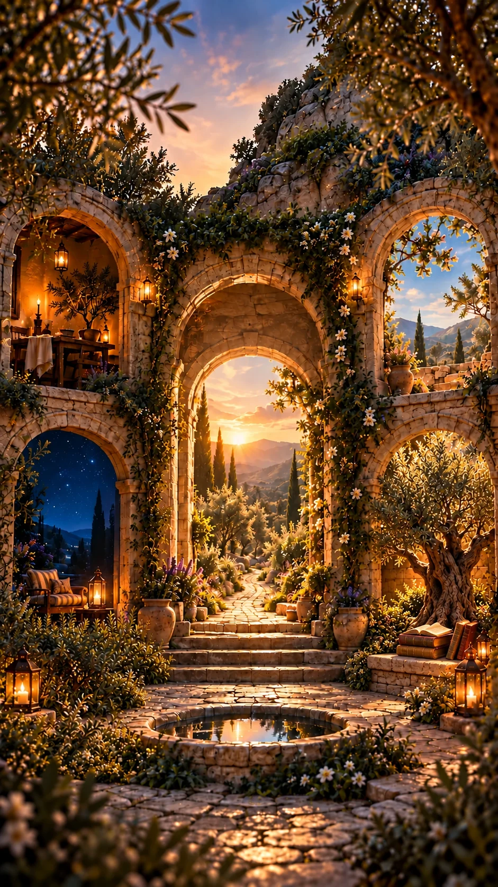
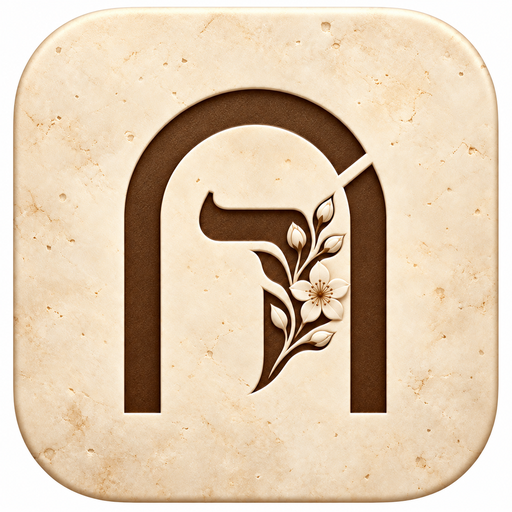

Siete puertas.
Un mismo Camino.
Entra por lo que hoy resuene contigo.
Biblioteca
Un lugar para leer con calma, conocer a nuestros sabios y volver a las fuentes.
Nombres y presencia
Leer los nombres del Creador en su contexto. Comprender, contemplar y responder en la vida.
Voces del Camino
Conoce a quienes leemos en Dérej y vuelve al texto con una pregunta nueva.
Genealogías
Explora las raíces de Abraham y sus familias. Continúa más allá de David, hasta el retorno del exilio, con ramas que se abren, fichas junto a cada nombre y estudios para saber más.
Patriarcas y matriarcas: las sefirot
Siete vidas y sus dimensiones espirituales. Explora las correspondencias tradicionales, las interpretaciones de las matriarcas y prácticas de reflexión, conectadas con las genealogías.
Salmos para el camino
Los cinco libros de Tehilim en una colección de estudio profundo, tradición y contemplación. Explora los 150 capítulos, los primeros estudios editoriales y un espacio dedicado al cuerpo y al alma.
Los 150 Salmos
Cinco libros, muchas voces: súplica, gratitud, justicia, restauración y alabanza.
Los 150 capítulos están indexados. Los estudios iniciales están señalados; el comentario exhaustivo de cada capítulo se publicará progresivamente.
Preparando índice…
El cuerpo y el alma
Explora una región del cuerpo y encuentra una lectura de acompañamiento.
Preparando atlas…
Escucha el cuerpo, estudia el Salmo
Selecciona un punto del mapa o utiliza el menú. La relación es temática y contemplativa: no es una indicación clínica ni una correspondencia mística obligatoria.
13 regiones · 5 momentos de lectura · 3 duraciones · 7 días de acompañamiento.
Salmos para estudiar
Preguntas para contemplar
Un gesto concreto
Tu recorrido de siete días
Un camino voluntario. El progreso se mantiene solo mientras esta página esté abierta y no se guarda información sobre tu cuerpo.
Cuatro niveles de lectura
Fuentes tradicionales y sus límites
Profundizar en Vayerá
Siete aliyot para explorar con calma. Abre el contexto, reconoce las fuentes y conoce a las personas del relato sin perder tu lugar.
Meditación judía y cabalística
Diez enfoques para orientar la atención y acercarnos al Creador de todo. Conoce sus raíces, explora prácticas introductorias y lleva una pregunta a tu vida.
Lectura por capítulos · Glosario · Fuentes consultablesAutoestima y dignidad
Mirarnos con verdad y aprender a cuidarnos. Un estudio profundo con fuentes judías, reflexión personal y prácticas para siete días.
Lectura por capítulos · Para estudiar a tu ritmoJonathan Sacks
Esperanza, escucha y responsabilidad. Conoce su vida y recorre siete lecturas para llevar su sabiduría a la vida compartida.
Estudio en español · Fuentes · Preguntas para conversarElige una lectura. Quédate con una pregunta. Llévala a tu vida.
90 días de Lejem
Alimento diario para el alma
Una pregunta. Una raíz. Una práctica en el mundo.
Bereshit · Noaj · Lej Lejá
Los cuatro caminos no son un test. Son espejos para reconocer dónde estás hoy.
¿Qué haces cuando todo es caos?
Elige el espejo que más se parece a tu estado de hoy. No hay puntaje ni respuesta correcta.
ADAM–ADAMÁ
ADAM–ADAMÁ permanece como Estudio completo de profundidad contextual. Esta conexión diaria sólo abre una ventana hacia él.
Profundizar es una invitación, no un requisito.
Práctica
No es una tarea para acumular. La práctica existe para que algo del Estudio toque vida real.
Una frase para seguir caminando.
Luz cálida · refugio · mesa
Una pausa para recibir, encender, compartir, descansar y volver a mirar la semana.
Tiempo · estaciones · memoria
Tiempos señalados para detenerse, recordar y volver a mirar el Camino.
Radio Dérej
Escoge una playlist y entra al clima sonoro.

Selecciona una playlist
Radio Dérej
Las siete aliyot en música y contemplación.
Huellas · brotes · memoria
Memoria personal sin puntuación, niveles ni rachas.
El Pozo
Preparando el encuentro…
Voces del Camino
Vidas, obras y enseñanzas. Preparando la lectura…
Patriarcas, matriarcas y las sefirot
Dérej / Biblioteca
Genealogías
De Adam al retorno del exilio
Toca un nombre para leer su ficha aquí mismo. Abre las ramas con + y continúa con ›. Puedes comenzar por cualquiera de estas familias.
Detrás de cada nombre, una lectura para comprender.
Línea paterna de esta selección · orden de generaciones
Shelomó
Nota de lectura
Toca un nombre para leer su historia o + para abrir sus descendientes.
Cómo leer este árbol · Fuentes y alcance
Una selección de 176 personajes: la línea de Shet desde Adam, las familias de Abraham, Israel, David y los reyes de Judá, hasta los nietos de Zerubavel nombrados al comienzo de 1 Crónicas 3:21. No reúne todas las familias bíblicas.
Las conexiones representan parentescos expresados en los pasajes indicados; no equivalen al orden de sucesión en el trono. Los nombres y sus variantes conservan su referencia para distinguir personajes homónimos.
Las fichas son síntesis originales de Dérej. Las notas distinguen el texto bíblico, las interpretaciones tradicionales y las filiaciones que admiten lecturas distintas. El árbol no completa generaciones ausentes ni resuelve diferencias mediante parentescos supuestos.
Lecturas principales: Génesis 5, 11, 16, 21–25, 29–30, 35–36 y 48; Rut 4:12–22; 1 Crónicas 3; Ageo 1:1. Cada personaje incluye su pasaje.
PARA TODO TIEMPO · EDITORIAL DÉREJ
Autoestima y dignidad
Mirarnos con verdad y aprender a cuidarnos.
Fuentes judías · Reflexión · Vida cotidianaEDITORIAL DÉREJ · ESTUDIO Y CONTEMPLACIÓN
Meditación judía y cabalística
Diez enfoques para comprender, contemplar y llevar a la vida.
Fuentes tradicionales · Prácticas de Dérej · Lectura a tu ritmo